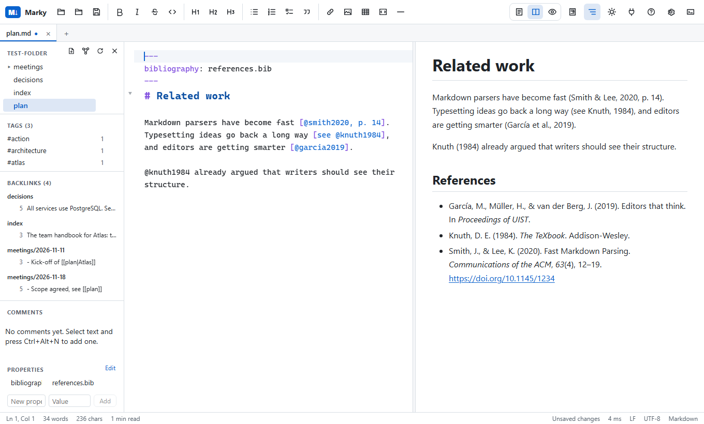

9. Citations
Marky cites from a bibliography the way Pandoc and most academic Markdown tools do, so your notes stay compatible.
1. A bibliography
Put your references in a file next to the note:
- BibTeX (
.bib): exported by Zotero, JabRef, Mendeley, Google Scholar and most reference managers. - CSL-JSON (
.json): exported by Zotero (Better CSL JSON) and others.
@article{smith2020,
author = {Smith, John and Lee, Kim},
title = {Fast Markdown Parsing},
journal = {Communications of the ACM},
year = {2020}, volume = {63}, number = {4}, pages = {12--19},
doi = {10.1145/1234}
}
2. Name it in the note
---
bibliography: references.bib
---
3. Cite
| Write | Author-date (default) | Numbered |
|---|---|---|
[@smith2020] |
(Smith & Lee, 2020) | [1] |
[@smith2020, p. 14] |
(Smith & Lee, 2020, p. 14) | [1, p. 14] |
[@smith2020; @knuth1984] |
(Smith & Lee, 2020; Knuth, 1984) | [1, 2] |
[see @knuth1984] |
(see Knuth, 1984) | [see 2] |
[-@smith2020] |
(2020) | [1] |
@knuth1984 says |
Knuth (1984) says | Knuth [2] says |
Three or more authors become García et al. A list of References goes at the end of the note, or where it has a line <!-- references -->.

Options
| Property | Does |
|---|---|
citation-style: numeric |
Numbers in order of first citation, and a numbered list (also ieee or vancouver) |
reference-section-title: Literatuur |
The heading above the list |
Where citations appear
In the preview, the seamless view, and in Word, PDF and HTML exports and published websites. The note itself keeps the [@key] text, so you can still change the style or use Pandoc. A key that isn't in the bibliography stays as [@key], so you can spot typos.